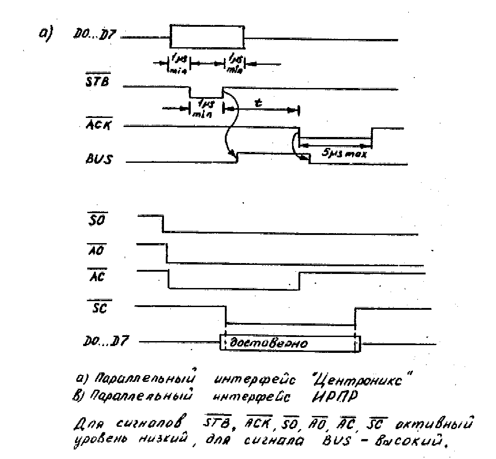

Сохранено с сайта http://arendatr.chat.ru
МОДУЛЬ ПАРАЛЛЕЛЬНОГО ИНТЕРФЕЙСА
"ПАРТНЕР 02.01"
Руководство по эксплуатации 1П3.039.005РЭ
1. Общие указания
ВНИМАНИЕ! Модуль параллельного интерфейса "Партнер 02.01" работает только с модулем вычислительным центральным "Партнер 01.01" (МВЦ) с операционной системой "МОНИТОР" версии 03. При включении МВЦ выводит на экран телевизора сообщение:
ПАРТНЕР-01.01 (В.03)
:->
Для доработки МВЦ с операционной системой "МОНИТОР" версии 02 и младше до версии 03 следует обратиться в ремонтные организации, перечень которых приведен на вкладыше к данному документу.
1.1. Модуль параллельного интерфейса (в дальнейшем МПРИ) "Партнер 02.01" предназначен для сопряжения модуля вычислительного центрального (в дальнейшем МВЦ) "Партнер 01.01" ТУ 25-7224.0005-88 с периферийными устройствами или двумя МВЦ по интерфейсу типа "Центроникс" или ИРПР.
Перед подключением МПРИ к МВЦ следует внимательно ознакомиться с настоящим руководством по эксплуатации, а также с руководством по эксплуатации на МВЦ "Партнер 01.01" 1П2.940.000РЭ. Грамотное обращение с МПРИ позволит Вам полностью использовать возможности МПРИ и обеспечит длительную и эффективную его работу.
1.2. При покупке МПРИ следует требовать проверки:
комплекта поставки в соответствии с разделом 2;
наличия в гарантийном и отрывном талонах настоящего руководства по эксплуатации даты продажи и штампа магазина;
сохранности пломб;
соответствия номера МПРИ в гарантийном талоне номеру на этикетку кожуха;
наличия штампа ремонтной организации, свидетельствующего о предторговой проверке МПРИ.
При утере гарантийного талона и нарушении пломб Вы лишаетесь права на гарантийный ремонт.
1.4. После хранения изделия в холодном помещении или его перевозки в зимних условиях, необходимо перед включением в электрическую сеть дать ему прогреться при комнатной температуре в течение 3-4 часов.
2. Комплектность поставки
В комплект поставки входят:
модуль параллельного интерфейса "Партнер 02.01" - 1 шт.;
розетка СНП59-64/95х11р-20-2 - 1 шт.;
руководство по эксплуатации 1П3.039.005РЭ - 1 экз.;
схема электрическая принципиальная и схема расположения элементов - 1 компл.
3. Основные технические характеристики
3.1. МПРИ обеспечивает возможность обмена информацией по интерфейсам типа "Центроникс" или ИРПР в режимах приема и передачи.
3.2. Разрядность принимаемых и передаваемыз данных - 8.
3.3. Количество управляющих сигналов интерфейсов: "Центроникс" - 4; ИРПР- 4.
3.4. Выбор интерфейса и режима работы осуществляется программно.
3.5. Ток потребления по каналу +5В, не более 600 мА.
3.6. Габаритные размеры МПРИ, не более 155х160х35 мм.
3.7. Масса. не более 0,5 кг.
4. Указание мер безопасности
4.1. При работе с МПРИ необходимо учитывать все требования к безопасности, указанные в руководстве по эксплуатации на МВЦ "Партнер 01.01" (1П2.940.000РЭ).
4.2. ВНИМАНИЕ! Во избежание поражения электрическим током запрещается эксплуатировать МПРИ со снятым кожухом.
Все подключения и отключения МПРИ, а также кабелей сопряжения с периферийными устройствами должны производиться на обесточенных МПРИ и периферийных устройствах.
4.3. Во избежание перегрева МПРИ запрещается закрывать вентиляционное отверстие.
4.4. При распайке кабелей связи необходимо надежно изолировать все открытые токоведущие части кабеля.
5. Краткое описание изделия
5.1. МПРИ по своим основным параметрам, определяющим функциональные возможности, соответствует требованиям технических условий 1П3.039.005ТУ.
5.2. МПРИ позволяет расширить функциональные возможности МВЦ "Партнер 01.01" в части организации связи с периферийными устройствами и другими МВЦ по параллельному интерфейсу типа "Центроникс" или по интерфейсу для радиального подключения устройств с параллельной передачей информации типа ИРПР.
5.3. Конструкция.
5.3.1. МПРИ выполнен на печатной плате, закрытой кожухом.
5.3.2. Подключение МПРИ к МВЦ осуществляется через системный разъем МВЦ Х4, расположенный на передней панели МВЦ. Доступ к разъему - через отверстие, предусмотренное в верхней части корпуса МВЦ. Периферийные устройства подключаются к МПРИ через разъем Х2, конструктивно расположенный в верхней части корпуса МПРИ.
5.4. Принцип работы
5.4.1. В ПЗУ МПРИ находятся драйверы интерфейсов "Центроникс", ИРПР и программа управления принтером.
5.4.2. Линии интерфейсов, используемые модулем (O - выдаваемые сигналы, I - принимаемые);
1) D0.HO...D7.HO, D0.HI...D7.HI - информационные линии;
2) линии управления приемом и передачи информации интерфейса "Центроникс":
STB.LO, STB.LI - уровень "L" на линии STB означает, что комбинация сигналов на информационных линиях достоверна, уровень "H" - не достоверна;
ACK.LO, ACK.LI - уровень "L" на линии ACK показывает, что блок приема записал данные и готов к обработке последующих данных;
SIN.LO, SIN.LI - блок приема может записать информацию на информационных линиях только тогда, когда на линии SIN уровень "L";
BUS.LO, BUS.LI - уровень "H" на линии BUS означает, что блок приема не может принимать данные;
3) линия управления приемом и передачей ИРПР:
SC.LO, SC.LI - управляющие сигналы передатчика. Уровень "L" на линии SC при активном AC означает, что комбинации сигналов на информационных линиях достоверны. Сигнал SC может переходить в активное состояние только после активизации сигнала AC. Сигнал SC может переходить в неактивное состояние только после дезактивизации сигнала AC.
AC.LO, AC.LI - управляющие сигналы приемника (направление к передатчику). Уровень "L" на линии AC означает, что приемник требует от передатчика новой информации. Уровень "H" сообщает передатчику о том, что приемник не готов к приему новой информации. Приемник удерживает сигнал в неактивном состоянии до тех пор, пока не дезактивизируется сигнал SC.
AO.LO, AO.LI - готовность приемника (направление к передатчику). Если на линии AO уровень "L", приемник может принимать данные под управлением SC, AC. Сигнал AO не зависит от SO.
SO.LO, SO.LI - готовность передатчика (направление от передатчика). Уровень "L" означает, что передатчик готов к передаче информации под управлением SC и AC. Сигнал SO включается независимо от сигнала AO.
5.4.3. В зависимости от выбранного режима МПРИ обеспечивает обмен данными в соответствии с временной диаграммой интерфейса "Центроникс" или ИРПР, приведенной на рисунке.
6. Подготовка к работе и порядок работы с изделием
6.1. Освободить МПРИ от индивидуальной упаковки.
6.2. Подготовить МВЦ к работе в соответствии с руководством по эксплуатации 1П2.940.000РЭ.
6.3. Распаять кабель связи с периферийными устройствами, используя разъем, входящий в комплект поставки МПРИ. Схемы соединений для принтеров типа CPF H80, СМ 6337, Robotron СМ 6329.02-М, а также двух МВЦ между собой приведены в приложении 1. Кабель необходимо распаять витыми парами многожильным проводом типа НВМ сечением не менее 0.12 мм2.
6.4. Подключить МПРИ к разъему Х1...Х4 МВЦ, периферийное устройство - к раззъему Х2 МПРИ.
6.5. Включить питание МВЦ, затем периферийного устройства.